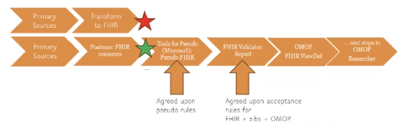

BgZ to OMOP
0.1.0 - CI build

BgZ to OMOP
0.1.0 - CI build

BgZ to OMOP - Local Development build (v0.1.0) built by the FHIR (HL7® FHIR® Standard) Build Tools. See the Directory of published versions
| Official URL: http://hl7.nl/fhir/bgz-to-omop/ImplementationGuide/hl7.fhir.nl.bgz-to-omop | Version: 0.1.0 | |||
| Draft as of 2024-12-06 | Computable Name: bgz-to-omop-ig | |||
Copied OMOP Logical Models from the FHIR to OMOP IG.

| IG | Package | FHIR |
|---|---|---|
  BgZ to OMOP BgZ to OMOP | hl7.fhir.nl.bgz-to-omop#0.1.0 | R3 |
 HL7 Terminology (THO) HL7 Terminology (THO) | hl7.terminology.r3#5.3.0 | R3 |
 Nictiz FHIR NL STU3 Zib2017 Nictiz FHIR NL STU3 Zib2017 | nictiz.fhir.nl.stu3.zib2017#2.2.18 | R3 |
Package nictiz.fhir.nl.stu3.zib2017#2.2.18 Nictiz NL package of FHIR STU3 conformance resources for HCIM Release 2017. Includes MedMij and HL7 NL. HCIMs: https://zibs.nl/wiki/HCIMRelease2017(EN) |